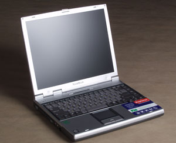
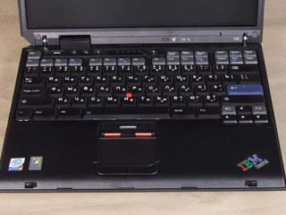
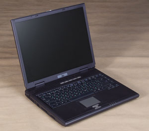

На сегодняшний день элементная база как настольных компьютеров, так и ноутбуков в целом одинакова, с той лишь разницей, что в ноутбуках используются мобильные аналоги компонентов десктопов - обычно с пониженным энергопотреблением, "усеченной" функциональностью, более низкой производительностью и меньшими габаритами. Однако эти правила работают не всегда - у каждого типа мобильных комплектующих есть свои особенности, на которых имеет смысл остановиться подробнее.
Процессоры. Пожалуй, одно из главных событий на рынке ноутбуков за последний год - появление моделей на базе процессоров семейства Intel Pentium 4. Таким образом, сегодня производители ноутбуков предлагают модели на основе Intel Celeron и Pentium III, причем как мобильных, так и обычных, и на двух ядрах (Coppermine или Tualatin), и Intel Pentium 4, тоже на двух ядрах - Willamette или Northwood, и ЦП на базе Northwood могут быть настольными или мобильными.
В результате под одним и тем же названием в ноутбуках могут "скрываться" разные процессоры, которые отличаются вычислительной мощностью и тепловыделением! Например, если указывается, что ноутбук оснащен процессором Pentium III 1,0 ГГц, то возможны три варианта: настольный Pentium III 1A ГГц (ядро Tualatin, кэш-буфер L2 - 256 Кбайт, тактовая частота системной шины - 133 МГц), "ранний" вариант мобильного Pentium III 1,0 ГГц (Coppermine, 256 Кбайт, 100 МГц), "поздний" вариант его же (Tualatin, 512 Кбайт, 133 МГц). Очевидно, что из трех вариантов предпочтительнее последний, поскольку этот ЦП обеспечивает наивысшую производительность и наименьшее энергопотребление и оснащен средствами энергосбережения Intel SpeedStep.
Интересно, что с процессорами Pentium III возникла парадоксальная ситуация - последние мобильные ЦП этого семейства по мощности опережают свои настольные аналоги из-за большего объема кэш-буфера L2 - соответственно 512 и 256 Кбайт. Поэтому при одинаковой тактовой частоте Pentium III портативный ПК может работать быстрее настольного.
Сходная картина и с ЦП Celeron, но по другой причине - здесь мобильные ЦП работают быстрее настольных из-за превосходства в тактовой частоте системной шины (соответственно 133 и 100 МГц). Отметим еще, что по скорости работы мобильный Celeron на ядре Tualatin не уступает настольному Pentium III на том же ядре, поскольку тактовая частота системной шины и емкость кэш-буфера L2 у них совпадают.
С процессорами Pentium 4 таких парадоксов пока нет, но и с ними тоже легко запутаться. Фактически мобильный Pentium 4 - это двойник настольного Pentium 4 на ядре Northwood (с кэш-буфером L2 512 Кбайт) с системной шиной 100 МГц (здесь имеется в виду физическая тактовая частота); отличается он только пониженным напряжением питания ядра (как следствие - меньшим энергопотреблением) и поддержкой технологии энергосбережения Intel SpeedStep. Поэтому разницы в скорости работы между ними нет. В то же время при одинаковой частоте ядра мобильный Pentium 4 работает быстрее настольного Pentium 4 на ядре Willamette (256 Кбайт кэш-буфера L2) с системной шиной 100 МГц, но медленнее Pentium 4 на ядре Northwood с системной шиной 133 МГц.
Как видно, процессоры современных переносных компьютеров "многолики", поэтому при покупке ноутбука рекомендуем точно выяснить, какой процессор в нем установлен, а еще лучше - проверить его характеристики с помощью какого-либо ПО для идентификации процессора, например, программы WCPUID.
Что же касается отставания мобильных ЦП от настольных по срокам появления на рынке, то оно составляет примерно полгода, по крайней мере для систем с мобильными Pentium 4.
Наборы микросхем. По сути, системные платы для ноутбуков строятся на базе тех же чипсетов, что и для настольных систем, с той лишь разницей, что у них снижено энергопотребление. Примером такой пары могут служить настольный Intel 845D и его мобильный аналог Intel 845MP.
Отметим также, что в некоторые мобильные наборы микросхем встраивается графическое ядро (например, в Intel 830MG и SiS650). Такие чипсеты используются в недорогих ноутбуках.
Системная память. На сегодня в ноутбуках используется ОЗУ тех же типов, что и в большинстве настольных ПК, - PC133 SDRAM и DDR266 SDRAM, а в скором будущем должны появиться модели с памятью DDR333 SDRAM. Однако портативные системы не оснащаются RDRAM-памятью.
Кроме того, в ноутбуках можно установить максимум два модуля памяти (в настольных ПК - до четырех), а иногда - только один (если часть ОЗУ сразу же распаивается на системной плате). В последнем случае наращивание ОЗУ может обойтись в кругленькую сумму.
Графические контроллеры. Надо признать, что ситуация с графической подсистемой ноутбуков хуже, чем с ЦП и ОЗУ, и здесь они пока не могут на равных соперничать с настольными системами, поскольку оснащаются либо наборами микросхем со встроенным (весьма маломощным) графическим ядром, либо мобильными графическими процессорами, - последние представляют собой модификацию "обычных", но со сниженным энергопотреблением и "урезанными" функциональностью и объемом локальной видеопамяти. Впрочем, в последнее время в этой области наметился некоторый прогресс: можно сказать, что сейчас скорость работы самых быстрых мобильных графических процессоров находится примерно на уровне настольных со средним быстродействием. Что же касается сроков внедрения, то появление мобильных аналогов настольных ГП "запаздывает" от полугода до года.
Жесткие диски. Как известно, жесткие диски - самое уязвимое место ПК, тем более ноутбуков, поэтому мобильные диски значительно отстают от настольных по скорости вращения. Большая часть ноутбуков на сегодня оснащается жесткими дисками со скоростью вращения 4200 об./мин и лишь изредка - 5400 об./мин, тогда как подавляющее большинство настольных систем уже давно оборудуется жесткими дисками на 7200 об./мин. Что касается максимальной емкости жестких дисков, то разрыв тоже значителен: мобильные - до 60 Гбайт, настольные - до 180 Гбайт.
Оптические дисководы. Здесь ноутбуки тоже проигрывают. Как правило, в них устанавливаются приводы, которые читают CD-диски на скорости до 24x, DVD-носители - до 8x, а записывают CD-R- и CD-RW-диски на скорости до 8x. И лишь в некоторых ноутбуках можно обнаружить дисковод, способный записывать данные на CD-R и CD-RW на скоростях соответственно до 16x и 12x.
Флоппи-дисковод. В последнее время довольно часто можно встретить ноутбук без встроенного флоппи-дисковода (он подключается как внешнее USB-устройство). Более того, иногда такие модели не комплектуются внешним USB-флоппи-дисководом, и это нужно учитывать при покупке.
Порты с низкоскоростными интерфейсами. Сегодня ноутбук, оснащенный полным набором "медленных" портов (PS/2, последовательным, параллельным, ИК) - редкость, поскольку большая часть современных периферийных устройств имеет USB-интерфейс. Чаще всего у ноутбука отсутствует последовательный порт, реже - PS/2 или ИК-порт, в некоторых случаях - параллельный (как правило, у суперлегких моделей). И это также следует учитывать при выборе ноутбука, поскольку низкоскоростные интерфейсы "отживают" не так быстро, и, возможно, придется покупать адаптер-переходник: например, USB - COM или USB - IrDA. Однако, на наш взгляд, такое решение не всегда удовлетворительно - например, перепрошивать мобильный телефон через обычный COM-порт все-таки надежнее, чем через переходник USB - COM.
Модем, Ethernet, беспроводная связь. Наличие встроенного факс-модема и сетевого Ethernet-интерфейса для ноутбуков наконец-то стало обязательным. Что же касается средств беспроводной связи, то базовые модификации ноутбуков ими не оснащаются, однако уже сейчас в большинство из них можно дополнительно установить модуль беспроводной связи 802.11b или сразу приобрести модификацию с этим модулем. С беспроводной связью Bluetooth ситуация пока значительно хуже - ею оборудованы лишь некоторые модели.
Несмотря на то что по быстродействию графической и дисковой подсистемы портативные машины пока отстают от настольных, можно сказать, что в целом по производительности самые мощные ноутбуки уже вполне успешно конкурируют с современными "обычными" ПК. В то же время, как показывает практика, ноутбуки начального и среднего уровня в большинстве случаев уже достаточно быстро работают с популярными офисными приложениями и мультимедиа-программами.
В этой статье мы рассматриваем результаты тестирования переносных компьютеров двух категорий: "экономического класса" - с ценой до 1500 долл. и "бизнес-класса" - со средствами коммуникации и для организации презентаций. Все ноутбуки имели оперативную память 256 Мбайт и установленную ОС Microsoft Windows XP Professional English.
В тестировании участвовали две модели Acer (предоставлены представительством
компании, http://www.acer.ru), две модели ASUSTeK
(от компании "Нексус", http://www.nex.ru), одна
модель Hewlett-Packard (от компании Laptopsales.ru, http://www.laptopsales.ru),
одна модель IBM (от компании "ВИРТ Текнолоджис", http://www.virt.ru)
и по две модели собственного производства от компаний Rover Computers (http://www.rovercomputers.com)
и "НКА-Групп" (http://www.iru.ru). Характеристики
представленных в обзоре систем приведены в .
Методика тестированияДля определения общей производительности системы мы пользовались пакетом ZD Content Creation Winstone 2002 1.0.1 - для измерения быстродействия ноутбуков при работе с популярными мультимедиа-приложениями и ПО для создания Web-контента - и ZD Business Winstone 2001 1.0.3 - для измерения производительности при работе с офисными приложениями. Для оценки скорости работы ЦП и системной памяти использовались тесты из состава ПО SiSoft Sandra Standard 2002.6.8.97. Производительность графической подсистемы при работе с 3D-играми измерялась средствами пакета MadOnion 3DMark2001 SE. Продолжительность работы ноутбуков от батареи измерялась с помощью пакета ZD Business Winstone 2001 BatteryMark 1.0.1. В дополнение к этому с помощью пакета WCPUID 3.0g измерялись тактовые частоты ядра ЦП, системной шины и шины памяти. Все тесты выполнялись под управлением ОС Microsoft Windows XP Professional Build 2600 в видеорежиме с глубиной цвета 16 бит и максимальным разрешением ЖК-панели. Поскольку производительность графической подсистемы сравнивалась при разрешении 1024х768, то на некоторых ноутбуках были дополнительно выполнены тесты из пакета MadOnion 3DMark2001 SE с этим разрешением. Полные результаты можно найти здесь. |
Модели экономического класса
Acer TravelMate 223XC
Вопреки распространенному мнению, процессор Celeron Mobile 1,13 ГГц, которым оснащен 223XC, убедительно продемонстрировал, что он далеко не безнадежен - во всех тестах на скорость работы ЦП из пакета Sandra 2002 этот ноутбук опередил модели ASUS M2400 и iRU Stilo-24MC на базе соответственно Pentium III Mobile 933 МГц и Pentium III Desktop 1,0 ГГц. Впрочем, это не было неожиданностью, поскольку архитектура ядра и частота системной шины у всех трех ЦП одинаковы и различие между ними сводится к разнице в объеме кэш-буфера L2 и частоте ядра. Поэтому Celeron Mobile 1,13 ГГц будет всегда работать быстрее Pentium III Desktop 1,0 ГГц (поскольку емкости кэш-буфера L2 у этих ЦП равны), а в тех случаях, когда емкость кэш-буфера L2 не влияет существенно на скорость работы ЦП, будет обгонять Pentium III Mobile 933 МГц, что и произошло в процессорных тестах Sandra 2002.
Однако в графическом тесте 3DMark2001 и в интегральных тестах CC Winstone и Business Winstone двукратное превосходство Pentium III Mobile 933 МГц по емкости кэш-буфера L2 - 512 Кбайт против 256 - дало себя знать, и здесь ASUS M2400 значительно опередил 223XC, несмотря на то, что в обеих моделях используется один и тот же набор микросхем системной платы (Intel 830MG со встроенным графическим контроллером) и ОЗУ одинакового типа. Поэтому в этих тестах 223XC занял только 4-е место в своем классе.
Зато в тестах на длительность работы от батареи 223XC зарекомендовал себя наилучшим образом, проработав более 4 ч и заняв 2-е место. При этом режим пониженного энергопотребления у него отсутствует (Celeron Mobile 1,13 ГГц не оснащен технологией Intel SpeedStep) - в противном случае этот ноутбук мог бы проработать еще дольше.
Среди других конструктивных достоинств 223XC - наличие двух гнезд для модулей памяти (размещены в отсеке на нижней панели ноутбука), двух гнезд для плат PC CardBus, порта PS/2 и последовательного порта (а вот ИК-порта и IEEE-1394 у него нет), встроенного флоппи-дисковода и полноразмерной клавиатуры (русские и латинские символы на ней, однако, нанесены одним цветом - белым), использование противоударной DASP-технологии защиты жесткого диска, а также такие приятные "мелочи", как удобно расположенный под левой рукой колесный регулятор громкости (спереди на левой панели), два гнезда - спереди на левой и правой сторонах крышки ноутбука - для крепления видеокамеры (входит в состав комплекта для проведения видеоконференций и видеосъемки USB VideoCapture Kit, который поставляется дополнительно), два светодиодных индикатора - режима питания ноутбука и работы в режиме "сна", которые выведены сзади на крышку ноутбука и всегда видны снаружи, и кармашек для визитной карточки на нижней панели.
В комплект поставки 223XC включается печатная документация к ноутбуку и ОС (к сожалению, только на английском языке) и богатый набор программ, среди которых отметим Acer Notebook Manager (ПО для изменения паролей, последовательности загрузки с устройств и настроек энергосбережения и просмотра аппаратной конфигурации ноутбука; работает в среде Windows), Acer Launch Manager (ПО для настройки кнопок быстрого запуска приложений), антивирус Norton AntiVirus, программный DVD-проигрыватель PowerDVD и пакет NTI CD-Maker для записи компакт-дисков.
223XC был единственным ноутбуком в своем классе, оснащенным комбинированным DVD-ROM/CD-RW-приводом (кстати, он съемный, и вместо него можно установить другой CD/DVD-привод); странно, однако, что при этом разработчики не добавили в ноутбук ТВ-выход - для просмотра видеороликов на экране ТВ-приемника с большой диагональю. Эта деталь, конечно же, увеличивает стоимость компьютера, однако, на наш взгляд, все же не оправдывает довольно высокую цену 223XC - 1500 долл. В итоге, несмотря на хорошую общую оценку качества, соотношение качества и цены у этого ноутбука было, пожалуй, самым плохим среди экономических моделей.
ASUS M2400
"Живучести" ноутбука M2400 можно только позавидовать. Благодаря использованию процессора Intel Pentium III Mobile 933 МГц, оснащенного технологией Intel SpeedStep и потребляющего при работе от батареи немногим более 9 Вт мощности, M2400 смог проработать в автономном режиме питания 4 ч 17 мин без подзарядки батареи, обогнав все протестированные модели.
В тестах на скорость работы ЦП из пакета Sandra 2002 этот ноутбук проиграл всем конкурентам своего класса вследствие довольно низкой тактовой частоты ЦП. Но благодаря емкости кэш-буфера L2 в 512 Кбайт он сумел "отыграться" на интегральных тестах CC Winstone и Business Winstone 2001 - 1-е место - и на графическом тесте 3DMark2001 - 2-е место, так что в целом M2400, пожалуй, был самым быстрым в экономическом классе.
Нам очень понравился приятный и стильный дизайн этого ноутбука, а также такие его достоинства, как возможность дополнительного оснащения модулем беспроводной связи 802.11b; наличие специальной кнопки Power Gear для ручного включения режима экономии энергии (при нажатии на нее снижается скорость работы процессора и уменьшается яркость экрана); удобная клавиатура с эффектно выполненными клавишами из полупрозрачного пластика (а вот русские и латинские символы на них, к сожалению, все прорисованы белым); блок кнопок для проигрывания компакт-дисков и управления громкостью (размещены на передней панели; с их помощью можно проигрывать CD, не запуская компьютер, а при включенном ноутбуке управлять программным CD-проигрывателем); размещенные на передней панели и хорошо заметные при закрытой крышке ноутбука индикаторы режима питания, зарядки батареи, получения электронной почты (рассчитан на работу с ПО Microsoft) и работы беспроводной связи (используется только если в ноутбук встроен модуль беспроводной связи 802.11b); кармашек для визитной карточки на нижней панели. Есть и подробное печатное руководство пользователя на русском языке, что у ноутбуков зарубежного производства встречается нечасто.
Кроме того, M2400 - самая легкая модель в своем классе: всего лишь 2,2 кг в снаряженном состоянии (кстати, вместо CD/DVD-привода можно поставить защитную заглушку, что уменьшает массу ноутбука до 2,0 кг). С учетом длительной автономной работы, высокой производительности и возможности организации беспроводной связи это позволяет смело рекомендовать его в качестве ноутбука для работы в "полевых" условиях.
При этом, однако, нужно учитывать, что M2400 не имеет встроенного флоппи-дисковода (он подключается как внешнее USB-устройство), PS/2 и последовательного портов (но в то же время оснащен ИК- и параллельным портами, одним IEEE-1394 и двумя USB-портами), ТВ-выхода и оснащен только одним отсеком для плат PC CardBus, одним разъемом для модулей памяти (что увеличит затраты при наращивании ОЗУ) и "простым" приводом CD-ROM (правда, съемным - вместо него можно установить другой CD/DVD-привод). Конечно, большую часть этих проблем пользователь может решить, купив дополнительно внешний USB-дисковод, репликатор портов, модуль DVD-ROM или DVD-ROM/CD-RW и адаптер-переходник USB-COM (поскольку в репликаторе портов нет последовательного порта). Однако все это удорожает систему, которая, вообще говоря, даже в базовой конфигурации стоит недешево - 1495 долл. Поэтому соотношение качества и цены у M2400 было не очень хорошим, несмотря на высокую общую оценку качества - второй результат среди экономических моделей.
HP OmniBook XE3
Элегантный дизайн всегда был "изюминкой" ноутбуков производства Hewlett-Packard. XE3 продолжает эту традицию: будучи недорогой моделью экономического класса, он выглядит довольно просто, но в то же время весьма оригинально - приятный темно-синий корпус с закругленными углами, крышка серебристого цвета, украшенная логотипом HP, а в закрытом виде ноутбук превращается в небольшой "кейс" обтекаемой, удобной и стильной формы.
К достоинствам XE3 следует, несомненно, отнести наличие двух разъемов для модулей памяти, двух отсеков для плат PC CardBus, встроенных флоппи- и DVD-ROM-дисководов, PS/2 и параллельного порта, двух USB-портов, ТВ-выхода, удобной клавиатуры (но все символы на ней нанесены белым) и кнопки отключения сенсорной панели TouchPad (блокирование "мыши" может пригодиться при наборе большого объема текста, когда сенсорная панель не нужна и даже мешает, поскольку пользователь иногда случайно может ее задеть). И все это, в общем, за весьма умеренную цену - 1200 долл.
Из недостатков XE3 мы хотим отметить процессор без средств энергосбережения Intel SpeedStep, отсутствие ИК- и последовательного портов (правда, адаптер-переходник USB - COM входит в комплект поставки), порта IEEE-1394, разъема для подключения док-станции или репликатора портов и использование встроенного, т. е. несъемного оптического дисковода (поэтому пользователь не сможет заменить установленный в ноутбук DVD-ROM-привод на какой-либо другой).
Однако следует обратить внимание, что в семействе XE3 есть модели, оборудованные ИК-портом, портом IEEE-1394 и разъемом для подключения репликатора портов, а также блоком кнопок для проигрывания компакт-дисков (размещаются на передней панели и позволяют использовать ноутбук как CD-проигрыватель, не запуская систему).
В тестах на скорость работы XE3 зарекомендовал себя очень хорошо, лишний раз доказав, что ноутбуки на мобильных процессорах Celeron могут на равных конкурировать с системами на базе Pentium III и младших моделей Pentium 4 и их еще рано сбрасывать со счетов. Ноутбук занял 2-е место не только в синтетических процессорных тестах из пакета Sandra 2002, но и в интегральных тестах CC Winstone и Business Winstone, и 3-е в тесте 3DMark2001.
Несмотря на отсутствие технологии Intel SpeedStep, XE3 показал вполне приличный результат в тесте на продолжительность работы от батареи - 3 ч 17 мин. Однако в семействе XE3 есть модели, оснащенные мобильными процессорами Pentium III, которые при работе от батареи потребляют значительно меньше энергии - около 9 Вт против 24 Вт. Так что если для вас важна продолжительность работы ноутбука в автономном режиме, стоит приобрести одну из этих моделей.
XE3 оказался самым тяжелым (3,45 кг) и крупногабаритным ноутбуком в своем классе, что перевесило его достоинства и в конечном счете сильно повлияло на общую оценку качества.
iRU Stilo-24MC
Главное, но далеко не единственное достоинство ноутбука Stilo-24MC - более чем привлекательная цена, самая низкая среди систем экономического класса - всего лишь 1087 долл., благодаря чему эта модель стала лидером в своем классе по соотношению качества и цены.
При этом Stilo-24MC обладает отличными возможностями для подключения периферии, имея на борту все необходимые разъемы (PS/2, параллельный и ИК-порты; два порта USB и один IEEE-1394; ТВ-выход и даже звуковой оптический S/PDIF-выход, физически совмещенный с разъемом линейного выхода), за одним исключением - этот ноутбук не оснащен последовательным портом. Модель может дополнительно оснащаться модулем беспроводной связи 802.11b, который устанавливается в специальный отсек и подключается к внутреннему разъему Mini PCI. Stilo-24MC имеет тщательно продуманную конструкцию: разработчики наделили его весьма приятной "внешностью" с передней панелью с закругленными ребрами, отсеком с разъемами для двух модулей памяти и отсеком с жестким диском (кстати, добраться до этих компонентов очень просто, поэтому пользователю нетрудно заменить их самостоятельно); удобной клавиатурой (за одним исключением - все символы прорисованы на ее клавишах белым); пятью программируемыми кнопками для быстрого запуска приложений; тремя индикаторами, размещенными сзади на крышке ноутбука (индикатор зарядки батареи, режима работы от батареи - нормальный/в режиме "сна", режима работы от блока питания - также нормальный/в режиме "сна"), которые всегда видны снаружи. Конструкторы очень толково распорядились поверхностью ноутбука, разместив на ней индикаторы обращения к оптическому дисководу, обращения к жесткому диску, включения режимов клавиатуры Num Lock, Caps Lock и Scroll Lock, кнопку/индикатор приема электронной почты (позволяет быстро проверить наличие новой почты), разъемы линейного выхода, линейного входа и микрофонного входа и колесный регулятор уровня громкости. Отметим также отличное печатное руководство пользователя Stilo-24MC, естественно, на русском языке.
А вот возможности расширения этого ноутбука весьма ограничены: Stilo-24MC оснащен только одним гнездом для плат PC CardBus, не имеет разъема для подключения док-станции или репликатора портов и, несмотря на наличие двух гнезд для модулей памяти, допускает объем ОЗУ не более 512 Мбайт - это ограничение накладывает набор микросхем системной платы VIA ProSavage PM133 (VIA VT8605 +VIA VT8231).
Кроме того, Stilo-24MC оборудован "простым" приводом CD-ROM (правда, съемным, так что вместо него можно установить другой CD/DVD-привод) и не имеет встроенного флоппи-дисковода (зато в комплект поставки входит внешний USB-флоппи-дисковод).
Stilo-24MC оснащается процессором Pentium III Desktop 1,0 ГГц с присущими ему двумя недостатками: небольшой объем кэш-буфера L2 (256 Кбайт) и отсутствие технологии Intel SpeedStep. Первый стал причиной низких результатов в тестах на скорость работы - последнее место среди экономических моделей в тестах CC Winstone, Business Winstone и 3DMark2001, второй - высокого энергопотребления при работе от аккумулятора (28 Вт) и не очень высокого, хотя и неплохого результата в тесте на продолжительность работы от батареи - 3 ч 02 мин. Следствие этого - довольно скромная общая оценка качества.
RoverBook Explorer FT6
| ; |  |
Высокие результаты в тестах, хорошие возможности расширения системы и подключения разноплановых периферийных устройств, а также трехлетнее гарантийное обслуживание - вот достоинства ноутбука FT6, благодаря которым он стал победителем в классе экономических моделей, заняв первое место по общей оценке качества.
Системная плата FT6 построена на базе набора микросхем SiS650, что в сочетании с двумя разъемами для модулей памяти дает возможность довести объем ОЗУ до 2 Гбайт - правда, пока только теоретически, поскольку емкость модулей памяти DDR266 SDRAM, используемых в ноутбуках, не превышает 512 Мбайт.
В FT6 используется один из самых скоростных и вместительных на сегодня 2,5-дюйм жестких дисков - Toshiba MK4019GAX объемом 40 Гбайт со скоростью вращения 5400 об./мин и кэш-буфером 16 Мбайт.
К достоинствам FT6 следует, несомненно, отнести наличие флоппи- и DVD-ROM-приводов (оба встроенные); PS/2, параллельного и ИК-портов (а вот последовательного порта у этой модели нет); двух USB-портов, одного порта IEEE-1394 и ТВ-выхода; удобной полноразмерной клавиатуры с нанесенными разным цветом - соответственно желтым и белым - русскими и латинскими символами; двух индикаторов: работы ноутбука в режиме "сна" и включения компьютера/зарядки батареи, размещенных на правой панели и доступных снаружи при закрытой крышке ноутбука. Отметим также приятный дизайн, хорошо подготовленное руководство пользователя на русском языке и богатый набор ПО в комплекте поставки, в числе которого DVD-проигрыватель PowerDVD, "Антивирус Касперского" и ПО для резервного копирования и восстановления данных Paragon System Recovery.
Есть у FT6 и недостатки. Ноутбук не имеет гнезд для плат PC CardBus и разъема для подключения док-станции или репликатора портов. Кроме того, FT6 оборудован "прожорливым" настольным процессором Intel Pentium 4 1,6 ГГц с очень высоким энергопотреблением (до 60,8 Вт), который не оснащен технологией Intel SpeedStep. Поэтому в тесте на продолжительность работы от батареи FT6 занял последнее место в своем классе с результатом 2 ч 10 мин.
А вот в тестах на скорость работы ноутбук продемонстрировал высокую производительность, заняв 1-е место в графическом тесте 3DMark2001 и 3-е - в CC Winstone и Business Winstone.
Цена FT6 довольно высока - 1430 долл., однако вполне оправданна, так что соотношение качества и цены у него находится на хорошем уровне.
Модели бизнес-класса
Acer TravelMate 630XC
По меркам, предъявляемым к современным бизнес-моделям, 630XC оснащен довольно "слабыми" процессором (мобильный Intel Pentium 4 1,4 ГГц) и графическим контроллером (NVIDIA GeForce2 Go 100 с 16 Мбайт видеопамяти DDR SDRAM). По этой причине он оказался самым медленным в своем классе, заняв последнее место не только в синтетических процессорных тестах из пакета Sandra 2002 и в графическом тесте 3DMark2001, но и в интегральных тестах CC Winstone и Business Winstone. Судя по двум последним показателям, скорость работы 630XC была на уровне моделей экономического класса, так что вряд ли его можно считать эталоном производительности бизнес-ноутбуков.
Но вот во всем остальном 630XC - "чистокровный" портативный бизнес-компьютер с обычной для такого случая атрибутикой: стильным дизайном, съемным комбинированным DVD-ROM/CD-RW-приводом (вместо него можно установить другой CD/DVD-привод, второй жесткий диск или защитную заглушку - для уменьшения массы ноутбука при транспортировке), портом IEEE-1394, ТВ-выходом, разъемом для репликатора портов. В числе некоторых интересных особенностей этой модели - использование противоударной DASP-технологии защиты жесткого диска и клавиатуры оригинальной конструкции (ее клавиши "расходятся" книзу под углом в пять градусов), наличие клавиши прокрутки в четырех направлениях, двух гнезд для крепления видеокамеры - спереди на левой и правой сторонах крышки ноутбука (камера входит в состав комплекта для проведения видеоконференций и видеосъемки USB VideoCapture Kit, который поставляется дополнительно), встроенного накопителя на флэш-картах Smart Card. Возможно оснащение ноутбука дополнительным комбинированным модулем беспроводной связи Invilink (работает одновременно в двух стандартах - 802.11b и Bluetooth).
Среди достоинств 630XC мы также отметили небольшую массу ноутбука - 2,58 кг; наличие двух гнезд для модулей памяти, параллельного и ИК-портов, двух USB-портов, трех светодиодных индикаторов - режима питания ноутбука, работы в режиме "сна", работы беспроводной связи (они выведены сзади на крышку ноутбука и всегда видны снаружи), кнопки включения беспроводной связи, кармашка для визитной карточки на нижней панели.
А из недостатков - отсутствие PS/2 и последовательного портов, только один разъем для плат PC CardBus, отсутствие внешнего USB флоппи-дисковода в комплекте поставки (пользователю придется приобретать его дополнительно) и неудобное расположение ИК-излучателя - по центру на передней панели.
630XC комплектуется печатными руководствами пользователя к ноутбуку и ОС (к сожалению, на английском) и богатым набором программ, среди которых отметим Acer Notebook Manager (ПО для изменения паролей, последовательности загрузки с устройств и настроек энергосбережения и просмотра аппаратной конфигурации ноутбука; работает в среде Windows), Acer Launch Manager (ПО для настройки кнопок быстрого запуска приложений), Norton AntiVirus, программный DVD-проигрыватель PowerDVD, пакет NTI CD-Maker для записи компакт-дисков и программный комплекс PlatinumSecret для работы с флэш-картами, в который входит три программы: PlatinumPAS - для контроля доступа на аппаратном уровне до запуска теста BIOS POST (если флэш-карта не вставлена в ноутбук, то он не будет запускаться); PlatinumSecure - для контроля доступа на уровне ОС, позволяет также шифровать/дешифровать файлы; PlatinumKey - для хранения на флэш-карте паролей доступа к Web-ресурсам, которые требуют авторизации.
На первый взгляд цена 630XC кажется весьма привлекательной - 1995 долл. (здесь 630XC уступил только iRU Brava-35CD/130. Однако, по нашему мнению, она все-таки несколько завышена и себя не оправдывает, что подтверждается низкой общей оценкой качества 630XC - последнее место среди бизнес-моделей.
ASUS L2B
Среди моделей бизнес-класса L2B, пожалуй, самый "коммуникабельный" ноутбук, приспособленный для обмена информацией с внешним миром лучше всех конкурентов - благодаря наличию привода DVD-ROM/CD-RW и флоппи-дисковода (оба устройства встроенные), двух гнезд для плат PC CardBus, двух портов USB и двух IEEE-1394, ТВ-выхода, разъема для репликатора портов, полного набора портов для подключения низкоскоростной периферии - PS/2, параллельного, ИК- и последовательного (он выведен наружу в виде mini-COM-разъема, и к нему подключается переходник на обычный девятиконтактный разъем RS-232, который входит в комплект поставки L2B). Конечно же, у ноутбука есть встроенные сетевой интерфейс и факс-модем, а также возможности оснащения дополнительным модулем беспроводной связи 802.11b.
К конструктивным достоинствам L2B следует также отнести наличие двух разъемов для модулей памяти, блока кнопок на передней панели для проигрывания звуковых компакт-дисков (L2B может работать как обычный CD-проигрыватель без запуска системы), колесного регулятора громкости (встроен в привод DVD-ROM/CD-RW), приятной глазу клавиатуры с полупрозрачными клавишами (правда, все символы нанесены белым), четырех индикаторов, расположенных сзади на крышке ноутбука и всегда доступных снаружи (показывают режим работы системы - нормальный, Suspend-to-RAM, Suspend-to-Disk, выключена; зарядку батареи; получение электронной почты; работу беспроводной связи - последний используется только при установленном модуле беспроводной связи) и кармашка для визитки на нижней панели. Отметим прилагаемые к L2B отлично подготовленное руководство пользователя на русском языке и хорошую подборку ПО, в которую входят офисный пакет "Русский Офис", программа для записи компакт-дисков ahead Nero Burning Rom и DVD-проигрыватель ASUSDVD 2000.
Системная память L2B работала на тактовой частоте 100 МГц, несмотря на то, что в ноутбуке установлены модули памяти DDR266 SDRAM, которые (согласно спецификации набора микросхем системной платы Intel 845MP) должны работать на тактовой частоте 133 МГц. Скорее всего, частота модулей памяти была снижена, чтобы обеспечить синхронный режим работы ОЗУ (когда тактовые частоты системной шины и шины памяти совпадают) и, как следствие, большую ее надежность и эффективность. По этой причине результаты L2B на тестах на скорость работы ОЗУ из пакета Sandra 2002 были низкими - на уровне систем, оснащенных памятью DDR200 SDRAM.
Но благодаря быстрому процессору Intel Pentium 4 1,8 ГГц этот ноутбук отлично зарекомендовал себя в интегральных тестах Business Winstone и CC Winstone, заняв в них соответственно 1-е и 2-е места. В графическом тесте 3DMark2001 его результативность, однако, была не столь высокой - по этому показателю он занял предпоследнее место в своем классе.
А вот в тесте на продолжительность работы от батареи L2B лидировал среди бизнес-моделей с солидным 30-минутным отрывом от ближайшего конкурента - 3 ч 47 мин. Поэтому с учетом широких коммуникационных возможностей, довольно привлекательной цены (2100 долл.) и неплохого соотношения качества и цены можно сказать, что L2B хорошо подойдет на роль универсального ноутбука для работы в дорожных условиях. Следует подчеркнуть, однако, что L2B - довольно тяжелая модель (3,2 кг). Впрочем, для ноутбука со встроенными флоппи- и оптическим дисководом это обычная цифра.
IBM ThinkPad T30
| ; | |
Высокая интегральная производительность, быстрая графическая и дисковая подсистема, встроенная аппаратная криптозащита данных, прекрасные возможности наращивания системы и богатый выбор дополнительных аксессуаров, очень удобная клавиатура и двойная система управления курсором мыши, прочный корпус из титанового композита, небольшая масса, стильный дизайн, трехлетняя гарантия - вот далеко не полный перечень достоинств модели T30, которая, несомненно, была лучшим представителем ноутбуков бизнес-класса. Неудивительно, что T30 получил высшую общую оценку качества и был заслуженно награжден знаком отличия "Выбор редакции BYTE/Россия".
T30, как следует уже из приведенной краткой характеристики этой модели, - "неординарный" ноутбук с множеством особенностей, и, пожалуй, главная из них - повышенная ударопрочность. За счет того, что верхняя крышка и нижняя панель ноутбука изготовлены из титанового композита, возрастает устойчивость корпуса и внутренних компонентов к ударным нагрузкам. Для защиты жесткого диска в T30 используется противоударная DASP-технология (на нижней панели ноутбука размещена демпфирующая подушка Shock Absorber). Кстати, дисковая подсистема T30 организована по последнему слову техники - на базе вместительного (40 Гбайт) и быстрого (скорость вращения - 5400 об./мин, емкость кэш-буфера - 16 Мбайт) жесткого диска Toshiba MK4019GAX, все данные на котором защищаются средствами встроенной в ноутбук технологии аппаратного шифрования (так что если этот диск подключить к другому компьютеру, то считать с него информацию будет невозможно).
T30 был единственным среди всех протестированных ноутбуков, оборудованным универсальным модульным отсеком Ultrabay Plus, - установленный в него по умолчанию привод DVD-ROM/CD-RW можно заменить не только на другой CD/DVD-привод, но и на флоппи-, LS-, ZIP-дисковод, второй жесткий диск или вторую батарею.
Кроме того, возможности системы могут быть расширены за счет увеличения емкости ОЗУ (T30 имеет два разъема для модулей памяти) и использования для подключения дополнительных устройств двух разъемов PC CardBus, последовательного, параллельного и ИК-портов, двух USB-портов, ТВ-выхода, разъема для подсоединения док-станции и встраиваемых дополнительно модулей беспроводной связи 802.11b и Bluetooth. Отметим, что в семействе T30 есть модели, изначально оборудованные модулями 802.11b и Bluetooth - одним или сразу двумя; кстати, если T30 оснащается беспроводной связью, то в него автоматически встраивается технология IBM Embedded Security Subsystem II для обеспечения безопасной работы в сети с помощью методов аутентификации и шифрования данных.
Следует, однако, подчеркнуть, что в T30 нет портов PS/2 и IEEE-1394 и флоппи-дисковода (пользователю придется дополнительно покупать либо флоппи-модуль, устанавливаемый в отсек Ultrabay Plus, либо внешний USB флоппи-дисковод).
Нам очень понравился продуманный до мелочей дизайн T30, выдержанный в классическом строгом IBM'овском стиле. Пользователи, безусловно, по достоинству оценят оригинальную подсистему управления мышью UltraNav: это два манипулятора курсора - сенсорная панель TouchPad, углы которой могут работать как четыре "горячие" кнопки для быстрого запуска приложений, и указатель TrackPoint, с помощью которого курсор можно позиционировать на экране с точностью до одного пиксела; две левые и две правые клавиши мыши - первая пара клавиш (левая плюс правая) размещена под сенсорной панелью, вторая - над ней; есть и средняя клавиша мыши (что у ноутбуков встречается крайне редко), она находится над сенсорной панелью.
T30 оснащен полноразмерной клавиатурой с очень удобным расположением клавиш (правда, русские и латинские символы все нанесены белым), лампочкой для подсветки клавиатуры, специальной кнопкой для запуска фирменной утилиты настройки конфигурации системы, кнопками для регулировки громкости и отключения динамиков, удобно размещенной кнопкой блокировки устройства в отсеке Ultrabay Plus (на правой панели) и расположенным рядом индикатором блокировки этого устройства.
T30 комплектуется печатным руководством пользователя на русском и английском языках и богатым набором системного и прикладного ПО, из которого отметим диагностический пакет PC-Doctor, программу для записи компакт-дисков Veritas Record Now and DLA и DVD-проигрыватель InterVideo WinDVD. Впечатляет также трехлетний срок гарантийного обслуживания и возможность ремонта ноутбука на месте эксплуатации.
В тестах на скорость работы T30 продемонстрировал высокую производительность, заняв 2-е место в тестах Business Winstone и 3DMark2001 и 3-е - в CC Winstone. А вот продолжительность работы от батареи у него была весьма скромной - предпоследнее место с результатом 2 ч 08 мин, несмотря на то, что в T30 используется мобильный Intel Pentium 4 1,8 ГГц, оснащенный энергосберегающей технологией Intel SpeedStep (попутно отметим, что для эффективного охлаждения процессора в T30 используется медный радиатор с закачанным внутрь него хладогеном). Скорее всего, разработчики T30 решили пожертвовать частью энергоресурсов ноутбука и уменьшить его массу, оснастив T30 легкой (всего лишь 0,325 кг) и, как следствие, маломощной батареей. Надо признать, им это удалось - при небольшой, но в то же время вполне приемлемой длительности работы в автономном режиме этот ноутбук оказался самым легким в своем классе - 2,33 кг.
Что касается цены, то T30 очень дорог - почти 4000 долл., что, впрочем, характерно для ноутбуков производства IBM.
iRU Brava-35CD/13
| ; | |
Главное достоинство Brava-35CD/13 - более чем привлекательная цена (1930 долл.), ниже, чем у конкурирующих моделей. В то же время этот ноутбук обладает такими качествами, обязательными для современных портативных бизнес-компьютеров, как приятный дизайн, хорошо продуманная конструкция, обеспечивающая комфортную работу, отличные возможности расширения и подключения "разноплановой" периферии. Кроме того, Brava-35CD/13 оснащается большим ЖК-экраном с диагональю 15,1 дюйма, продемонстрировал во время испытаний пусть не рекордную, но довольно приличную производительность, которой вполне достаточно для работы с бизнес-приложениями, и получил весьма высокую общую оценку качества, так что его можно смело рекомендовать для приобретения в качестве недорогого бизнес-ноутбука. В итоге Brava-35CD/13 лидировал в своем классе по соотношению качества и цены, почему и был награжден знаком отличия "Выбор редакции BYTE/Россия".
Еще одно достоинство Brava-35CD/13 - наличие полного набора портов со старыми интерфейсами (PS/2, последовательный, параллельный и ИК), что у современных ноутбуков встречается крайне редко. Функциональность этой модели может быть также расширена благодаря наличию двух разъемов для модулей памяти, двух гнезд для плат PC Card, двух портов USB и порта IEEE-1394, ТВ-выхода, звукового оптического S/PDIF-выхода (физически совмещен с разъемом линейного выхода), порта Mini PCI (к нему можно подключить внутреннее PCI-устройство - например, модуль беспроводной связи 802.11b, которым Brava-35CD/13 оснащается дополнительно) и разъема для подключения репликатора портов.
Отметим также встроенный флоппи-дисковод и грамотную конструкцию ноутбука - к положительным моментам следует отнести наличие специальной кнопки для ручного включения режима энергосбережения, колесного регулятора громкости (размещен сзади на левой панели; если его нажать, звук отключается), полноразмерной клавиатуры с нанесенными соответственно зеленым и белым русскими и латинскими символами, блока из четырех индикаторов (работы системы - включена, выключена, в состоянии Suspend-To-RAM, в состоянии Suspend-To-Disk; зарядки батареи; получения электронной почты; работы беспроводной связи - используется только при наличии модуля беспроводной связи), которые размещены на передней панели и видны при закрытой крышке ноутбука, и кармашка для визитной карточки на нижней панели. Стоит обратить внимание на отлично подготовленное руководство пользователя на русском языке.
Brava-35CD/13 оснащен приводом DVD-ROM, что уже нельзя считать достоинством - на сегодня стандартом де факто для ноутбуков бизнес-класса стал комбинированный привод DVD-ROM/CD-RW. Кроме того, у Brava-35CD/13 он встроенный, поэтому пользователь не сможет самостоятельно заменить его на другой оптический дисковод.
Несмотря на то, что, согласно спецификации набора микросхем Intel 845MP, на базе которого построена системная плата Brava-35CD/13, память DDR266 SDRAM в этом ноутбуке может работать на тактовой частоте 133 МГц, она работала на частоте 100 МГц. Как выяснилось, разработчики BIOS решили, что ОЗУ будет эффективнее работать в синхронном режиме - когда тактовые частоты системной шины и шины памяти совпадают. Поэтому производительность Brava-35CD/13 в синтетических тестах на скорость работы ОЗУ из пакета Sandra 2002 была низкой - на уровне, типичном для систем с памятью DDR200 SDRAM.
Сочетание медленной памяти с относительно маломощным процессором (мобильный Intel Pentium 4 1,6 ГГц - по его тактовой частоте Brava-35CD/13 проигрывал всем соперникам, за исключением Acer TravelMate 630XC), скорее всего, стало причиной низких показателей этой модели в интегральных тестах CC Winstone и Business Winstone, в которых она заняла предпоследнее место, опередив лишь тот же Acer TravelMate 630XC. А вот в графическом тесте 3DMark2001 ноутбук зарекомендовал себя лучше благодаря графическому контроллеру с большим объемом локальной видеопамяти (32 Мбайт) - здесь его результативность была на среднем уровне, равно как и в тесте на длительность работы от батарей - 2 ч 51 мин.
Нельзя сказать, что Brava-35CD/13 очень тяжел, однако легким его тоже не назовешь - при массе 3,38 кг он оказался самым тяжелым среди моделей бизнес-класса. Впрочем, здесь он проиграл ближайшим соперникам не так уж много - около 200 г, однако транспортировать этот ноутбук в снаряженном состоянии вручную будет уже нелегко (в прямом смысле этого слова).
RoverBook Navigator KT7
KT7 построен на основе самых новых и скоростных комплектующих, используемых сегодня в ноутбуках бизнес-класса, и по качеству отобранных для его сборки базовых компонентов был абсолютным лидером в своем классе: мощный мобильный Intel Pentium 4 2,0 ГГц, быстрая оперативная память DDR266 SDRAM, высокопроизводительный графический контроллер ATI Radeon Mobility M7-P с 64 Мбайт видеопамяти DDR SDRAM, скоростной и вместительный жесткий диск Toshiba MK4019GAX (объем 40 Гбайт, скорость 5400 об./мин, 16 Мбайт кэш-буфера), многофункциональный комбинированный привод 8x CD-R/8x CD-RW/24x CD-ROM/8x DVD-ROM Toshiba SD-R2102 (кстати, он съемный, и его легко заменить на другой CD/DVD-привод или второй жесткий диск).
Поэтому не удивительно, что KT7 стоил довольно дорого - 2450 долл.; однако, как показали проведенные испытания, его цена вполне оправданна. Так, KT7 занял 1-е место среди бизнес-моделей в тестах на скорость работы ЦП из пакета Sandra, в интегральном тесте CC Winstone и графическом тесте 3DMark2001, 3-е - в интегральном тесте Business Winstone, а в целом по скорости работы был лучшим в своем классе.
Благодаря хорошим рабочим характеристикам основных компонентов и отличным результатам в тестах на скорость работы KT7 получил высшую общую оценку качества и, следовательно, имеет хорошее соотношение качества и цены. Поэтому если вам нужна переносная система бизнес-класса с максимальной производительностью, то KT7 будет отличным выбором.
При этом, однако, нужно иметь в виду, что использование в этой модели мощных комплектующих стало причиной высокого энергопотребления, и ноутбук смог проработать от батареи по современным меркам совсем недолго - 1 ч 55 мин, даже несмотря на технологию Intel SpeedStep.
К достоинствам KT7 следует также отнести отличные возможности для обмена данными с самой разной периферией - для чего можно задействовать четыре USB-порта и один порт IEEE-1394; гнездо для плат PC CardBus (к сожалению, только одно); PS/2, параллельный и ИК-порты; ТВ-выход и звуковой оптический S/PDIF-выход. В ноутбуке имеются два разъема для модулей памяти, съемный флоппи-дисковод (вместо него можно быстро установить второй CD/DVD-привод или жесткий диск), блок кнопок для проигрывания компакт-дисков и управления громкостью вместе с небольшим ЖК-дисплеем (размещены на передней панели и позволяют использовать KT7 как обыкновенный CD-проигрыватель, не запуская систему), расположенные сзади на крышке ноутбука и всегда доступные снаружи три индикатора (режима питания ноутбука, зарядки батареи, получения электронной почты). Отметим также длительный срок гарантии на ноутбук (три года), хорошо подготовленное руководство пользователя на русском языке и богатый набор ПО в комплекте поставки, среди которого DVD-проигрыватель WinDVD, "Антивирус Касперского", программу для записи компакт-дисков Easy CD Creator 5 (Basic) и ПО для резервного копирования и восстановления данных Paragon System Recovery.
Из недостатков у KT7 было отмечено только отсутствие последовательного порта и разъема для подключения док-станции или репликатора портов.
Весит KT7 довольно много - 3,2 кг, что, впрочем, неудивительно, поскольку он оснащен сразу двумя отсеками для съемных устройств, в которые по умолчанию устанавливаются флоппи-дисковод и привод DVD-ROM/CD-RW.
Выбор редакции
Ноутбук RoverBook Explorer FT6 - это отличный компромисс между невысокой ценой, с одной стороны, и производительностью и комфортабельностью работы - с другой. Благодаря современным и довольно скоростным компонентам - процессору Intel Pentium 4 1,6 ГГц, памяти DDR266 SDRAM обеъмом 256 Мбайт (кстати, на сегодня ее можно нарастить до 1 Гбайт, а в перспективе, благодаря использованию набора микросхем системной платы SiS650, - до 2 Гбайт), графическому контроллеру (встроен в набор микросхем системной платы) с большим объемом видеопамяти (до 64 Мбайт, выделяется динамически в ОЗУ), жесткому диску Toshiba MK4019GAX 40 Гбайт со скоростью вращения 5400 об./мин и кэш-буфером 16 Мбайт (на сегодня это один из самых скоростных и вместительных 2,5-дюйм жестких дисков для ноутбуков), которые нечасто встретишь в экономических моделях, RoverBook Explorer FT6 продемонстрировал хорошую производительность в тестах на скорость работы.
А широкие возможности наращивания системы и подключения разнообразных периферийных устройств в сочетании с трехлетним сроком гарантийного обслуживания окончательно склонили чашу весов в его пользу. Несомненно, на сегодня RoverBook Explorer FT6 - один из лучших недорогих ноутбуков на рынке, закономерно ставший победителем в классе экономических моделей.
Множество передовых технических решений, примененных в IBM ThinkPad T30, позволяет по праву назвать эту модель самой оригинальной среди участников тестирования. Ударопрочность ноутбука повышена благодаря изготовленным из титанового композита крышке и нижней панели корпуса, защита жесткого диска от ударных нагрузок улучшена за счет применения DASP-технологии, а эффективный медный радиатор с закачанным в него хладогеном, охлаждающий ЦП, надежно защитит ноутбук от перегревания в самую жаркую погоду.
IBM ThinkPad T30 был единственным из протестированных ноутбуков, оборудованным универсальным модульным отсеком Ultrabay Plus, в который легко установить не только CD/DVD-привод, но и флоппи-, LS-, ZIP-дисковод, второй жесткий диск или вторую батарею. А отличные возможности "общения" этого ноутбука с периферийными устройствами самого разного типа дополнительно усиливаются док-станцией или встраиваемыми модулями беспроводной связи 802.11b и Bluetooth.
Разработчики IBM ThinkPad T30 также встроили в него аппаратные средства шифрования данных на жестком диске, а если этот ноутбук оснащается средствами беспроводной связи, то в него автоматически встраивается оригинальная технология IBM Embedded Security Subsystem II, обеспечивающая безопасную работу в сети.
Пользователи по достоинству оценят стильный дизайн и исключительно комфортную конструкцию ноутбука с полноразмерной клавиатурой с удобным расположением клавиш, оригинальной подсистемой управления мышью UltraNav, кнопками для регулировки громкости и отключения динамиков и даже лампочкой для подсветки клавиатуры.
Благодаря быстрому мобильному процессору Intel Pentium 4 1,8 ГГц и "шустрому" жесткому диску Toshiba MK4019GAX (5400 об./мин, 16 Мбайт кэш-буфера) этот ноутбук продемонстрировал высокую производительность в тестах на скорость работы. Впечатляет также масса IBM ThinkPad T30 - всего лишь 2,33 кг и солидный срок гарантийного обслуживания - три года.
Легкий, надежный, удобный и мощный IBM ThinkPad T30, по праву ставший победителем среди моделей бизнес-класса и награжденный знаком "Выбор редакции BYTE/Россия", одинаково хорошо подойдет для работы в офисе и дома, во время деловых путешествий и туристических поездок.
iRU Brava-35CD/13 - типичный представитель современных бизнес-ноутбуков и обладает всеми качествами систем такого класса: приятный дизайн, хорошо продуманная конструкция, экран с большой диагональю - 15,1 дюйма, отличные возможности расширения системы и подключения периферии (особо отметим полный набор портов с "медленными" интерфейсами - PS/2, последовательный, параллельный и ИК - и наличие звукового оптического S/PDIF-выхода, а также возможность подключения репликатора портов и оснащения встроенным модулем беспроводной связи 802.11b). Производительность этой модели вполне достаточна для комфортной работы с бизнес-приложениями.
В результате iRU Brava-35CD/13 был признан моделью с наилучшим сочетанием качества и цены среди ноутбуков бизнес-класса и также награжден знаком отличия "Выбор редакции BYTE/Россия".